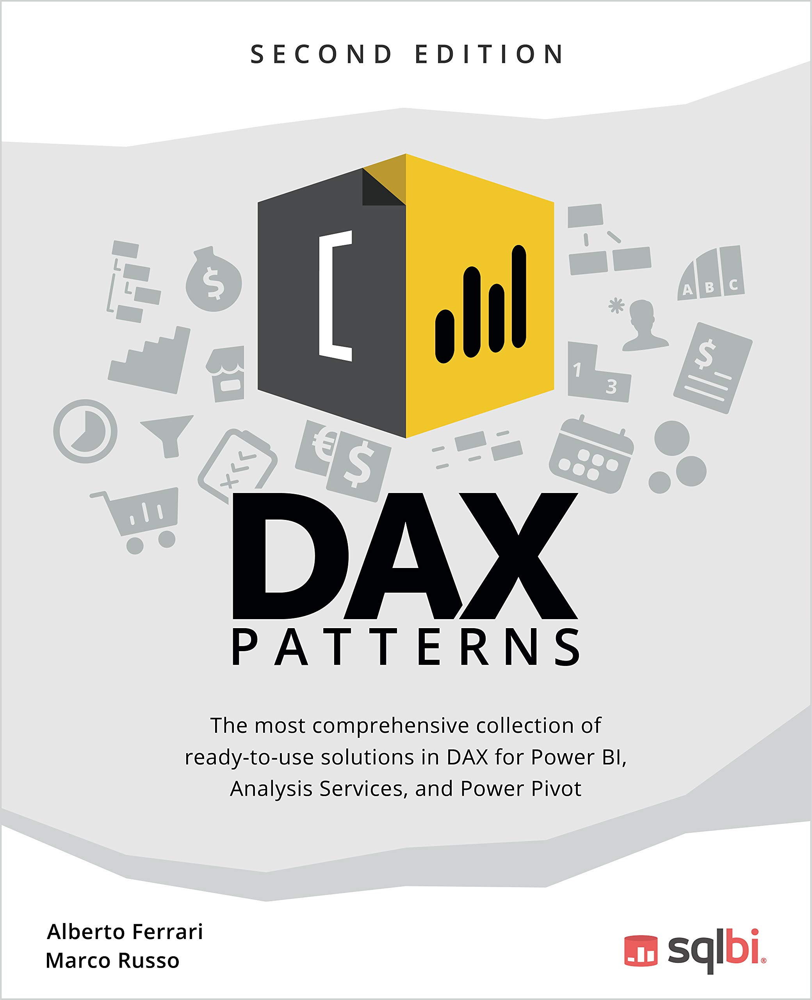
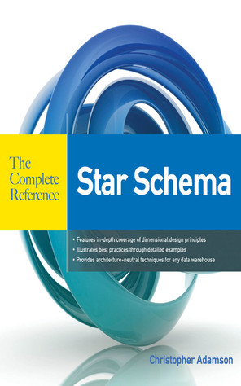
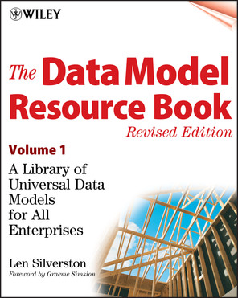
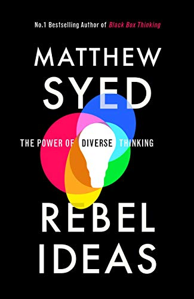

Seuraavat Kirjat ovat dataneuvoksen lkukemai ja suosittelemia.
Kirjoittajat: Alberto Ferrari & Marco Russo (2017)
Kirja rakentaa ymmärryksen siitä, miksi Power BI -tietomalli toimii niin kuin se toimii. Ferrari ja Russo selittävät tähtimallin, VertiPaq-moottorin peruslogiikan ja DAX-kielen yhteyden toisiinsa arkkitehtuurin tasolla.
Tarkastele Amazonissa →Lukemalla tämän kirjan ymmärrät miksi haluat rakentaa tähtimallin ja mitä tapahtuu jos rakennat jotain muuta.
Kirjoittajat: Marco Russo & Alberto Ferrari (2019)
Kirja syventyy DAX-kieleen (Data Analysis Expressions) ja VertiPaq-moottorin toimintaan. Se selittää, miten moottori pakkaa ja enkoodaa dataa ja miksi sarakkeiden kardinaliteetin vähentäminen on suorituskyvyn kannalta tärkeää.
Tarkastele Amazonissa →Kirjaa on mukava availla työh ohessa ja katsella kun Power BI:n semanttinen malli lataa dataa. Tästä opit kaiken mitä Power BI:n ja SSAS-mallien toiminnassa tapahtuu. Jos luet kirjan niin että ymmärrät sisällön opit miten mallinnat parhaiden käytäntöjen mukaan ja miten vältyt "yllättäviltä" suorituskykyongelmilta.

Kirjoittajat: Marco Russo & Alberto Ferrari (2021)
Kirjasta löytyy paljon hyviä suoraan ympäristöön käytettäviä kaavoja. Kaavat noudattavat kaikki tähtimallin pohjalle rakennettua sapluunaa. Voit käyttää kaavoja sellaisenaan tai muokata niitä tarpeidesi mukaan. Teos on käytännönläheinen kokoelma todistettuja DAX-kaavamalleja yleisimpiin liiketoimintatarpeisiin, kuten time intelligencen, vuosittaisiin vertailuihin ja ABC-analyyseihin.
Tarkastele Amazonissa →Käytä tätä kirjaa apuna kun tiedät mitä haluat laskea Power BI:ssä, mutta et ole varma miten. Kirja antaa valmiit kaavat useimpiin yleisiin laskentatarpeisiin. Kaikki kirjan kaavat on kirjoitettu tähtimallin päälle, joten ne toimivat aina hyvin mallinnetuissa malleissa.

Kirjoittaja: Christopher Adamson (2010)
Kattava opas dimensionaaliseen tietovarastosuunnitteluun, joka kattaa sekä perusteet että edistyneet tekniikat todellisen maailman monimutkaisiin tilanteisiin. Kirja etenee dimensionaalisen suunnittelun perusteista yritystason tietovarastoarkkitehtuureihin ja BI- sekä ETL-järjestelmien optimointistrategioihin.
Tarkastele Amazonissa →Tästä kirjasta oppii kaiken mitä tähtimallista voi oppia. Adamson käy läpi aiheen niin perusteellisesti, että lukemisen jälkeen tähtimallin rakenne ja sen takana olevat suunnittelupäätökset ovat täysin selkeitä. Yhdistettynä Ferrari & Russon Power BI -kirjojen oppiin kokonaisuus on lyömätön — kun tietää miksi malli rakennetaan tietyllä tavalla ja osaa myös kirjoittaa DAX-kaavat sen päälle, ollaan jo hyvin pitkällä.

Kirjoittaja: Len Silverston (2001)
A Library of Universal Data Models for All Enterprises — kattava kokoelma valmiita tietomalleja yleisimpiin liiketoiminta-alueisiin, kuten henkilöihin, organisaatioihin, tuotteisiin, tilauksiin ja taloushallintoon. Kirja tarjoaa testattuja ja uudelleenkäytettäviä tietomalliratkaisuja, joiden avulla tietokantasuunnittelijat voivat nopeuttaa mallinnusprosessia sen sijaan, että aloittaisivat alusta ja keksisisvät kaiken itse.
Tarkastele Amazonissa →Tätä ei kannata lukea alusta loppuun, käytä mielummin viitekirjana. Minusta oli hyödyllistä ja mielenkiintoista nähdä eri liiketoiminta-alueiden mallinnusratkaisuja,koska vaikka mallit ovat vanhoja ei organisaatioiden liiketoimintalogiikka ei ole muuttunut. Tästä saat ilmaisia sapluunaratkaisuja monenlaisiin tietomalleihin
Kirjoittaja: André Spicer (2018)
Kirja tutkii, miksi organisaatioissa puhutaan niin paljon ilman, että sanotaan mitään. Spicer analysoi johdon sanahelinää — kuten "synergiat", "agiliteetti" ja "disruption" — ja osoittaa, kuinka se haittaa oikeaa ajattelua ja päätöksentekoa.
Tarkastele Amazonissa →Ei datakirja, mutta tämä kannattaa jokaisen data-asiantuntijan kannattaa lukea. Kun johto vaatii "tekoälypohjaisia reaaliaikaisia synergiota", tämä kirja auttaa tunnistamaan mistä on kyse: ei mistään. "Bullshittiä" ei voi torjua ilman että sen tajuaa. Kirja auttaa tunnistamaan tyhjän puheen ja tyhjät sanat.

Kirjoittaja: Matthew Syed (2019)
Kirja käsittelee, miksi kognitiivisesti monimuotoiset ryhmät ratkaisevat monimutkaisia ongelmia tehokkaammin kuin homogeeniset asiantuntijaryhmät. Syed osoittaa konkreettisilla esimerkeillä, miten erilaiset näkökulmat ja taustat tuottavat parempia päätöksiä. Syed käy kirjassaan läpi myös sen minkälaisia seurauksia homogeenisten ryhmien tekemillä päätöksillä on ollut.
Tarkastele Amazonissa →Data-tiimit joissa kaikki ajattelevat samalla tavalla löytävät samat asiat — ja jättävät huomaamatta samat sokeat pisteet. Syed perustelee kognitiivisen monimuotoisuuden arvon konkreettisilla esimerkeillä, ei HR-puheella. Rekrytoi eri taustoista, saat parempia analyyseja.